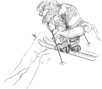

Chapter 1. Getting Started This chapter shows how to combine basic C++ with the functionality provided by Qt to create a few small graphical user interface (GUI) applications. This chapter also introduces two key Qt ideas: "signals and slots" and layouts. In Chapter 2, we will go into more depth, and in Chapter 3, we will start building a more realistic application. If you already know Java or C# but have limited experience with C++, you might want to start by reading the C++ introduction in Appendix B. |